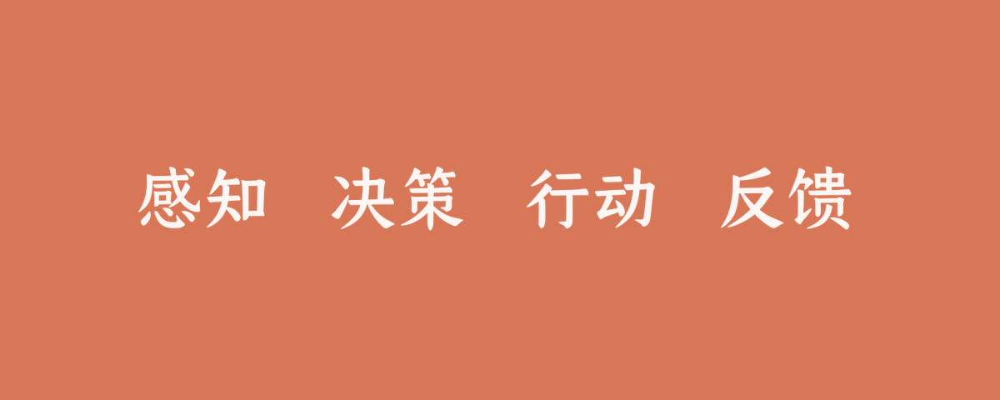

你不知道的 Agent：原理、架构与工程实践
Harness 比更贵的模型更决定成功率
先看这五句
- 更贵的模型带来的提升，常常没有想象中大。Harness 和验证质量对成功率的影响更大。
- 循环本身不到 20 行，而且不该膨胀成状态机。新能力叠在外面：扩工具、调提示、状态外化。
- 调试先查工具定义。多数选错工具，是描述不准，不是模型笨。
- 评测系统出问题，比 Agent 出问题更难发现。分数掉了先修评测，再改 Agent。
- 安全边界先于功能。谁能用、能在哪用、做了什么可追踪；Prompt Injection 按 source-sink 收口。

这是一份阅读笔记，不是原文转载。接上一篇 Claude Code 之后，Tw93 把资料、开源实现和自己的代码过了一遍：控制流、上下文、工具、记忆、多 Agent、评测、追踪、安全，最后用 OpenClaw 落地。
循环、Workflow 与 Harness
Agent Loop 抽象后不到 20 行：感知 → 决策 → 行动 → 反馈，直到模型返回纯文本。从最小实现扩到子 Agent、压缩、Skills，主循环基本没变。新能力只通过三种方式接入：扩工具和 handler、调系统提示、状态外化到文件或数据库。模型负责推理，外部系统负责状态和边界。
Anthropic 的区分：路径由代码写死的是 Workflow，下一步由 LLM 动态决定的是 Agent。很多挂着 Agent 名的产品其实更接近 Workflow，两者没有高下，关键是任务适不适合。
五种控制模式：提示链、路由、并行（分段或投票）、编排器-工作者、评估器-优化器。多数系统是组合，并不需要完整自主权。
Harness 至少四块：验收基线、执行边界、反馈信号、回退手段。这个判断在高可验证任务上最成立；开放研究、多轮协商里，模型上限仍然更关键。OpenAI 那组「3 人 5 个月百万行」的故事，作者读成工程决策：Agent 看不到的等于不存在；约束编码进 Linter/CI 而不是文档；端到端自主；最小化合并阻力。
用任务清晰度和验证自动化画四象限：右上角目标明确、结果可自动验证，最适合 Agent；目标清楚但验收靠人，吞吐量封顶在审查速度；有自动反馈但目标模糊，会高效地往错的方向跑。
上下文与工具
注意力是 O(n²)。无关内容占大头，决策质量就掉，这叫 Context Rot。分层：常驻层短硬可执行；Skills 描述常驻、正文按需；运行时注入动态信息；记忆不直接进系统提示；确定性逻辑交给 Hooks/代码，不要让模型反复读。
压缩三种：滑窗、LLM 摘要、工具结果替换。压缩最容易丢掉的是架构决策和失败路径，标识符必须原样保留。文件系统适合当上下文接口：工具写文件，Agent 用 grep 按需读。Cursor 把 MCP 描述同步到文件夹后，相关任务总 token 降了 46.9%。
Skill 描述要像路由条件：Use when / Don't use when，加反例。文中一组数字：没有反例准确率从 73% 掉到 53%，加上反例升到 85%。调试 Agent 应先检查工具定义。
工具设计三代：API 封装 → ACI（工具对目标，不是对 endpoint）→ Advanced Tool Use（Tool Search、代码编排中间结果、带真实示例）。5 个 MCP 就可能带来约 55K 的工具定义开销。框架内部事件不要进 LLM，过滤后再发。
记忆、自主度与多 Agent
四种记忆：上下文窗口是工作记忆；Skills 是程序性记忆；JSONL 历史是情景记忆；MEMORY.md 是语义记忆。整合必须可回退：只移动指针，失败则归档原文，不要删。
长任务跨 session：Initializer 先把 feature-list.json、进度文件和初始 commit 写下盘，后面的 Coding Agent 每次读文件恢复、做一块、跑测试、更新 passes、提交后退出。进度放文件，不放上下文。同一时间只能有一个 in_progress。慢 I/O 进后台，下一轮再注入结果。
多 Agent 先解决隔离和协议，再谈并行。指挥者是同步互动，统筹者是异步委派、人只在两端出现。子 Agent 适合搜索和试错，主线程只要结论。幻觉会互相放大，要交叉验证。子 Agent 限制深度，最小提示只给 Tooling / Workspace / Runtime，不带 Skills 和 Memory。
评测、追踪与 OpenClaw
Agent 评测看环境里发生了什么，不只看它说了什么。Pass@k 问「能不能做到」，Pass^k 问「改完有没有回归」。三类评分器：代码最确定，模型补语义，人工建基准。transcript 和 outcome 都要覆盖。20–50 个真实失败案例就能启动；两个专家判断不一致，说明验收还没写清。分数下降，先查环境噪声，再动 Agent。
Trace 是排查前提。两层可观测：人工抽样校准，LLM 自动评估覆盖。在线评测按规则采样：负反馈全量、高成本优先、变更后 48 小时加严。事件流一次发布、多路消费。
OpenClaw 五层：Gateway、Channel、Pi Agent、工具、上下文+记忆。MessageBus 把渠道和循环隔开。安全三件套：白名单、工作空间隔离、审计。Prompt Injection 按 source-sink：最小权限、敏感操作确认、外部内容标不可信、关键路径独立复核。实现顺序：单渠道跑通 → 安全边界 → 记忆整合 → Skills 先于新工具 → 第一个失败就建评测。